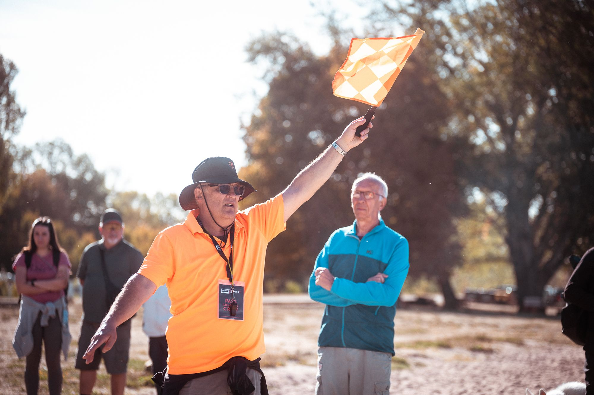
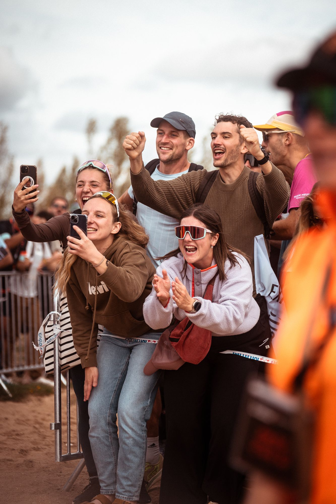
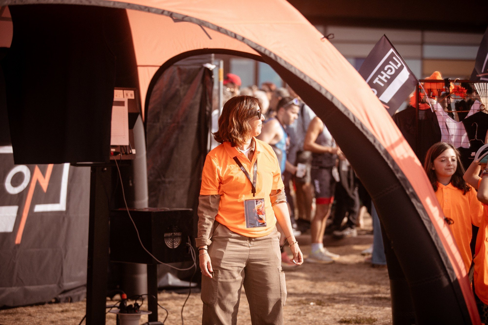
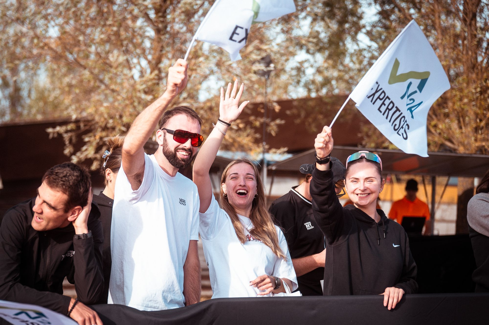

Rejoindre l'aventure Pas besoin de dossard.
Bénévoles, partenaires, presse ou simplement fans : il y a plein de façons de faire partie de LIGHT ON TRI.
Du triathlon sérieux, sans se prendre au sérieux.
LIGHT ON organise des événements outdoor en Lorraine : triathlon, trail et running. Le goût de l'effort, grandeur nature.

Il y a un format pour vous
Du MiniKids au L***, en passant par les RUN : on peut venir pour se tester, pour un chrono, ou pour accompagner les enfants sur leur premier dossard.
Trois lieux, trois ambiances
Woippy pour ouvrir la saison, Pierre-Percée et ses sapins en juin, Madine pour finir en septembre. Même organisation, décor différent.
Tout le monde fait la course
Athlètes, bénévoles, supporters sur le bord de la route : chacun a son rôle. Et plus on est nombreux, plus ça fait de bruit à l'arrivée.
Le plaisir avant le chrono
On vient pour les trois disciplines et la ligne d'arrivée. Le chrono, c'est un bonus.
Le LIGHT ON Crew.
Sans bénévoles, pas de triathlon. Une matinée, une journée ou tout le week-end : vous choisissez.

Signaleur
Sur le parcours vélo ou course à pied, pour guider et sécuriser les athlètes. Le poste le plus applaudi de la journée.
Ravitaillement
Vous tenez un ravito : de l'eau, des encouragements, et des athlètes qui s'en souviendront.
Retrait des dossards
Le premier sourire du week-end, c'est vous.
Trois triathlons, une saison entière.
Woippy, Pierre-Percée, Madine : associez votre marque à un événement, ou à toute la saison LIGHT ON TRI.

Visibilité sur le terrain
Village LIGHT ON, arche d'arrivée, parcours : vous êtes là où passent les athlètes et leurs supporters.
Activation sur mesure
Stand, animation, offre pour les participants : on construit ensemble ce qui a du sens pour vous.
Espace presse & médias.
Journalistes, médias locaux, créateurs : on vous facilite la venue et l'accès aux infos, sur les trois triathlons 2027.
Accréditations
Pour couvrir un événement sur place, du Village LIGHT ON aux points clés des parcours. Écrivez-nous en amont de la course.
Dossier & visuels
Chiffres clés, logos et photos sont disponibles sur demande pour vos publications.
Contact presse
hello@lightontri.com, en précisant votre média et votre besoin.
Toute la saison, en direct.
Les annonces, les photos, les résultats et les coulisses, avant tout le monde.
Très bonne communication sur les réseaux sociaux, ça donne envie.
Une question ? On vous répond.
Courses, inscriptions, bénévolat, partenariat : une seule adresse pour tout LIGHT ON TRI.